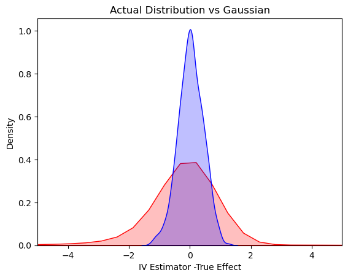

Weak IV Experiments
Contents
25. Weak IV Experiments#
# Import relevant packages
using Pkg
Pkg.add("CSV"), using CSV
Pkg.add("DataFrames"), using DataFrames
Pkg.add("GLM"), using GLM
Pkg.add("FixedEffectModels"), using FixedEffectModels
Pkg.add("PrettyTables"), using PrettyTables
Pkg.add("CovarianceMatrices"), using CovarianceMatrices
Pkg.add("RegressionTables"), using RegressionTables
Pkg.add("StatsFuns"), using StatsFuns
Pkg.add("Plots"), using Plots
Pkg.add("MLBase"), using MLBase
Pkg.add("Seaborn"), using Seaborn
Pkg.add("Random"), using Random
Pkg.add("Statistics"), using Statistics
Updating registry at `C:\Users\Work\.julia\registries\General.toml`
Resolving package versions...
No Changes to `C:\Users\Work\.julia\environments\v1.7\Project.toml`
No Changes to `C:\Users\Work\.julia\environments\v1.7\Manifest.toml`
function foo1(a;rng=MersenneTwister(3))
return randn(rng,a)
end
foo1 (generic function with 1 method)
function foo2(a;rng=MersenneTwister(1))
return randn(rng,a)
end
foo2 (generic function with 1 method)
B = 1000
IVEst = zeros( B )
n = 100
beta = 0.25
U = foo1(n)
Z = foo2(n)
D = beta*Z+U
Y = D + U;
intercept = ones(length(U))
data1 = DataFrame(intercept = intercept, U = U, Z = Z, D = D, Y = Y);
mod = reg(data1, @formula(D ~ Z))
Linear Model
=======================================================================
Number of obs: 100 Degrees of freedom: 2
R2: 0.067 R2 Adjusted: 0.057
F-Stat: 7.01262 p-value: 0.009
=======================================================================
D | Estimate Std.Error t value Pr(>|t|) Lower 95% Upper 95%
-----------------------------------------------------------------------
Z | 0.250108 0.094447 2.64814 0.009 0.0626815 0.437535
(Intercept) | 0.0873342 0.0949433 0.919856 0.360 -0.101078 0.275746
=======================================================================
IV = reg(data1, @formula(Y ~ 0 + (D ~ Z)))
IV
IV Model
============================================================
Number of obs: 100 Degrees of freedom: 1
R2: 0.752 R2 Adjusted: 0.749
F-Stat: 6.79219 p-value: 0.011
F-Stat (First Stage): 7.01315 p-value (First Stage): 0.008
============================================================
Y | Estimate Std.Error t value Pr(>|t|) Lower 95% Upper 95%
------------------------------------------------------------
D | 0.994509 0.381596 2.60618 0.011 0.23734 1.75168
============================================================
IV.coef
1-element Vector{Float64}:
0.994509337024402
Note that the instrument is weak here (contolled by \(\beta\)) – the t-stat is less than 4.
25.1. Run 1000 trials to evaluate distribution of the IV estimator#
# dependent variable ~ exogenous variables + (endogenous variables ~ instrumental variables)
# Set seed
B = 1000
IVEst = zeros(B)
for i in 1:B
U = randn( n)
Z = randn( n)
D = beta*Z+U
Y = D + U
intercept = ones(length(U))
data2 = DataFrame(intercept = intercept, U = U, Z = Z, D = D, Y = Y);
IV = reg(data2, @formula(Y ~ + (D ~ Z)))
IVEst[i,1] = IV.coef[2]
end
println(minimum(IVEst))
println(maximum(IVEst))
-40.368264648867964
57.83003936193075
IVEst
1000-element Vector{Float64}:
-0.2633141021687235
0.8948832260053269
-0.20787697208091646
0.6792079361265198
1.052671004982911
-0.7421608576444562
1.1668318792400871
0.933747261081341
0.6850752909186767
1.4639180207647025
-0.9642817021998845
-1.497309542643626
1.2189323077695131
⋮
5.460232661324924
0.5478868710622211
1.3717744154929605
1.2644078444676423
1.487865163308266
0.7873831110483491
0.7967961713080116
0.9696312102644875
-0.07785624411680934
0.08917470799234822
1.4232140851370487
0.9943702695396225
25.2. Plot the Actual Distribution against the Normal Approximation (based on Strong Instrument Assumption)#
val = collect(range( -5, 5.5, step = 0.05 ))
var = (1/beta^2)*(1/100) # theoretical variance of IV
sd = sqrt(var)
μ=0; σ=sd
d = Normal(μ, σ)
normal_dist = rand(d,1000)
# plotting both distibutions on the same figure
Seaborn.kdeplot(x = IVEst.-1, shade = true, color = "red")
Seaborn.kdeplot(x = normal_dist, shade = true, color = "blue")
Seaborn.title("Actual Distribution vs Gaussian")
Seaborn.xlabel("IV Estimator -True Effect")
Seaborn.xlim(-5,5)

(-5.0, 5.0)